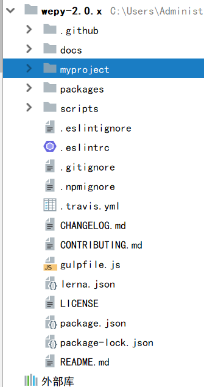

npm install wepy-cli -g 全局安装
使用 wepy init standard myproject 初始化项目，使用 wepy list 查看项目模板
使用 wepy init standard myproject 初始化项目，使用 wepy list 查看项目模板
cd myproject 切换到项目目录
npm install 初始配置文件
wepy build --watch 开始编译（生成一个dist文件夹编译成小程序的文件格式）
<<<<<<< HEAD
-
注意：
在小程序编辑器最右上角有个详情要把里面的所有选项全去掉
webstorm 需要调高亮状态 （1.在设置里面找到 Plugins -> 搜索vue.js;2:在编辑器下面的文件类型（File Types）中的上面找到（Vue.js Template），再在下面添加*.wpy）
======= <>注意：
在小程序编辑器最右上角有个详情要把里面的所有选项全去掉
webstorm 需要调高亮状态 （1.在设置里面找到 Plugins -> 搜索vue.js;2:在编辑器下面的文件类型（File Types）中的上面找到（Vue.js Template），再在下面添加*.wpy）
wepy中，如果不是页面里面用@tap绑定的方法，这个方法就得与methods同级，调用的时候 this.fun
export default class MyComponent extends wepy.component { customData = {} // 自定义数据 customFunction () {} //自定义方法 onLoad () {} // 在Page和Component共用的生命周期函数 onShow () {} // 只在Page中存在的页面生命周期函数 config = {}; // 只在Page实例中存在的配置数据，对应于原生的page.json文件 data = {}; // 页面所需数据均需在这里声明，可用于模板数据绑定 components = {}; // 声明页面中所引用的组件，或声明组件中所引用的子组件 mixins = []; // 声明页面所引用的Mixin实例 computed = {}; // 声明计算属性（详见后文介绍） watch = {}; // 声明数据watcher（详见后文介绍） methods = {}; // 声明页面wxml中标签的事件处理函数。注意，此处只用于声明页面wxml中标签的bind、catch事件，自定义方法需以自定义方法的方式声明 events = {}; // 声明组件之间的事件处理函数 } -
在config = {}中
navigationBarTitleText: '秦商新闻' 导航title
wx.setNavigationBarTitle({ title: this.tit}) 在script中更改导航title
'enablePullDownRefresh': true 开启下拉刷新（哪个页面需要就在那个页面加，全局需要在app.wpy window下面写）
"backgroundTextStyle": "dark" 开启刷新点点
"onReachBottomDistance": 80 据底部多高开始调用onReachBottom()
>>>>>>> 9b69b24ab813b5c7fbb2ef3d69d8592dd0281645 -
原 bindtap="click" 替换为 @tap="click"
原bindtap="click" data-index={{index}}替换为@tap="click({{index}})"。
自定义组件命名应避开微信原生组件名称以及功能标签
-
组件的用法：
1.在组件中，引入wepy “import wepy from 'wepy'”;
2.在组件中，export default class XXXX extends wepy.page {}
3.在app.wepy中，在 config 下面的 pages 下以键值对的形式声明组件
-
<<<<<<< HEAD
小程序转义html文件
1.在项目中放入 htmlParser.wepy 文件 htmlParser.wepy
2.在需要转义的页面引入上面的文件 import htmlParser from '@/components/htmlParser'
3.在compontents中定义组件名：components = { htmlParser: htmlParser };5.在script中调用需要转义的数据 this.$apply(); //要在这个数据变化完成后调用 this.$invoke('htmlParser', 'htmlParserNotice'); //调用转义方法=======下拉刷新
1.'enablePullDownRefresh': true 开启下拉刷新（哪个页面需要就在那个页面config = {}加，全局需要在app.wpy window下面写）
2.写一个与methods同级的onPullDownRefresh方法
如：onPullDownRefresh(){ wx.showNavigationBarLoading() //在导航条上显示加载状态 this.gtedatas() // 一个与methods同级的请求数据的方法 } -
写法：
1.三元表达式绑定类名 如下：
《view class="{{ active == item.domain ? 'active type_name' : 'type_name'}}"》《/view》
2.循环：
《view class="" wx:for="{{item}}" wx:for-item="col" wx:for-index="ind" wx:key="ind"》{{col.name}}《/view》
3.a标签：
《navigator hover-class="none" class="cons_li_a" url="content?weid={{item.weid}}"》《/navigator》
hover-class="none" 去掉点击时候的颜色
url 是跳转路径，需要在app.wey的page下面设定跳转页面的相对路径
export default class extends wepy.app { config = { pages: [ 'pages/content' ], }携带参数就可以用查询字符串
特别要注意的是《view》《/view》 后面的标签中不能存在空格，像《/view 》这样就会报错
-
在与components同级创建model文件夹
文件结构：

.
在index.js文件中封装一个请求方法
import wepy from 'wepy'; import ajax from '../utils/ajax'; //业务相关接口 import news from '../model/news'; //新闻模块接口 import activity from '../model/activity'; //活动模块接口 import common from '../model/common'; //公共接口 let model={}; model.apiUrl = { 'common': common, 'news' : news, 'activity' : activity }; model.login = async() => { var login = await wepy.login(); var getOpenId = await model.init('common.get_session_key',{'js_code': login.code}); wepy.setStorageSync('userInfo' , getOpenId.data); console.log('start-userinfo',getOpenId.data) }; model.init = async(action, param) => { let apiArr = action.split('.'); let apiInfo = model.apiUrl[apiArr[0]][apiArr[1]]; var getUserInfo = wepy.getStorageSync('userInfo'); if(!getUserInfo.user_info){ console.log('需要激活'); wx.redirectTo({ url: '/pages/login' }) } let res = await ajax.method(apiInfo.method, apiInfo.api, param); if(res.data.uptoken){ return res.data; } switch (res.data.code){ case 200: return res.data; case 401: //重新登录 model.login(); case -200: wepy.showToast({ title: res.data.message, icon: "none" }); break; } }; module.exports = model;封装ajax
import wepy from 'wepy'; import app from '@/utils/app'; let ajax = {}; let api = 'https://dev.wezchina.com/api/'; let header = {'Content-Type': 'application/json'}; ajax.method = async(method, url, param) => { try{ let apiUrl = api+url; //如果链接需要拼接url if(param && param.apiUrlSuffix){ apiUrl = apiUrl + '/' + param.apiUrlSuffix; } //根据用户信息加上token头 const userInfo = wepy.getStorageSync('userInfo').user_info; if(userInfo && !app.empty(userInfo)){ header['Token'] = userInfo.token } let res = await wepy.request({ url : apiUrl, method : method, data : param && !param.apiUrlSuffix ? param : {}, header : header }); return res }catch(e){ console.log(e) } }; export default ajax;>>>>>>> 9b69b24ab813b5c7fbb2ef3d69d8592dd0281645